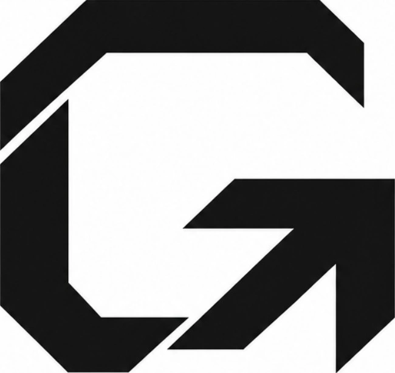
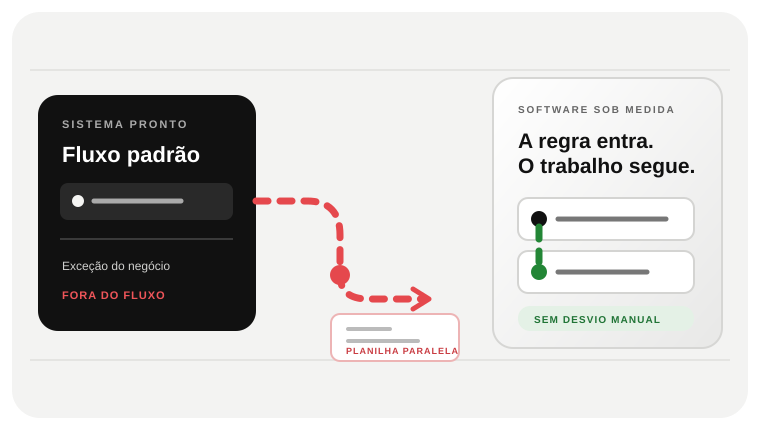

01 · A REGRA
A ferramenta atende o padrão. E as exceções?
O dinossauro antigo representa o jeito conhecido de trabalhar. O limite aparece quando cada caso diferente exige um desvio manual.

SITES · SOFTWARE · SISTEMASDescrever um projetoQUANDO O SOFTWARE PRONTO TRANSFORMA EXCEÇÃO EM ROTINA
Planilhas paralelas, conferência duplicada e exceções manuais mostram o que acontece quando a ferramenta não cobre as regras do negócio. A Girofy mapeia o processo e constrói software próprio apenas onde o pronto falha — com escopo, integrações e operação definidos antes do código.

TECNOLOGIA QUE ACOMPANHA AS REGRAS DO NEGÓCIO
Comece na regra que exige desvio manual.
O PROJETO COMEÇA NA REGRA QUE NÃO CABE NO PRONTO
Siga o caminho da regra que ficou de fora até uma solução que a equipe consegue operar.
SOFTWARE SOB MEDIDA · O PROBLEMA VISÍVEL
Antes de escolher tecnologia, localize o trabalho que hoje depende de exceções, cópias e memória.
A equipe registra a exceção numa planilha ou conversa porque o fluxo padrão não permite fazer o trabalho real.
Quando ferramentas não compartilham contexto, uma alteração precisa ser repetida — e conferida — em vários lugares.
Uma regra comercial muda, mas a configuração disponível não acompanha. O time cria um desvio e passa a manter dois processos.
O TRABALHO QUE PRECISA SER FEITO
Software sob medida faz sentido quando um fluxo próprio afeta atendimento, operação ou receita e as alternativas disponíveis exigem contornos recorrentes.
Desenhar usuários, entradas, decisões, exceções e resultado esperado para separar o indispensável do que pode esperar.
Escolher o que construir, o que integrar e o que continuar usando; sistema personalizado não significa reescrever tudo.
Planejar permissões, dados, suporte e evolução junto com a solução, para o sistema não virar mais uma caixa-preta.
DECIDIR SEM APEGO À TECNOLOGIA
Quando o fluxo é recorrente, atravessa pessoas ou ferramentas e os desvios têm custo suficiente para justificar um produto digital próprio.
DO PROBLEMA A UM ESCOPO DECIDÍVEL
Seguimos um caso que sai do padrão, registramos quem decide e comparamos configuração, integração e desenvolvimento antes de fechar a primeira entrega.
Seguimos um caso do início ao fim e registramos regra, exceção e quem decide.
Definimos uma versão menor, dados envolvidos, limites e o critério para saber se resolveu o ponto.
Validamos as partes de maior risco antes de ampliar; cada etapa tem demonstração e decisão de continuidade.
PERGUNTAS DE QUEM ESTÁ AVALIANDO
Só quando as regras que diferenciam o processo justificam desenvolvimento. Se um produto pronto cobre o uso real com ajustes simples, começar por ele tende a custar menos e chegar antes.
O custo depende dos fluxos, perfis de acesso, integrações, migração de dados, segurança e operação necessária. Um exemplo real de uso permite estimar melhor do que uma lista de funcionalidades.
Às vezes. Depende de APIs, permissões, limites e qualidade dos dados de cada ferramenta. Essa verificação entra no escopo antes de prometer uma integração.
UMA CONVERSA COMEÇA COM UM CASO REAL